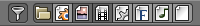

File¶
The File tab in User Preferences allows you to configure auto-save preferences and set default file paths for blend-files, rendered images, and more.
文件路径¶
各种各样的外部文件可以通过以下的选项来定位。
- 字体
系统将默认在此处寻找可用字体。
- 纹理
系统将默认在此处寻找可用纹理。
- 渲染输出
渲染完成的图片及影响的保存位置。
- 脚本
用于搜索Python脚本的额外路径，你可以瞧瞧后文的Python脚本内容。
- 声音
系统将默认在此处寻找可用音频。
- 临时文件夹
临时文件的储存位置。
- 渲染缓存路径
快速缓存渲染图像的位置。
- 国际化(i18n)分支
本地svn翻译文件副本分支的导向路径，这功能使得你能在UI界面中完成翻译。
- 图像编辑器
打开外部图像编辑软件的路径（用gimp或者ps的熊孩子注意了，就是用来打开这些软件的！）
- 动画播放器
打开外部视频播放器来播放渲染好的动画的路径。
注解
Blender大爷不会自动生成路径端的文件夹，请自己动手。
脚本路径¶
默认情况下blender会遵循多个脚本的引导路径，当你设置了用户脚本路径，一条额外的引导路径会被Blender识别，这个功能可用来储存确定的脚本，模板，预设，使其独立于当前blender的版本。
Inside the specified folder, specific subfolders have to be created to tell Blender what to look for where. This folder structure has to mirror the structure of the scripts folder found in the installation directory of Blender:
脚本
插件
样式
预设
摄像机
布料
用户界面主题
操作项
渲染
- ...
设置启动文件
模板中不是所有文件夹都需要预设
自动执行:¶
Python脚本（包括驱动程序）因为安全因素考虑，默认不被执行。
- 自动运行 Python 脚本
忽视安全因素自动运行Python脚本。
- 排除的路径
- Blend files in these folders will not automatically run Python scripts. This can be used to define where blend-files from untrusted sources are kept.
保存和读取¶
- 相对路径
系统默认使用 相对路径 。
- 压缩文件
Compress blend-file when saving.
This option will compact your files whenever Blender is saving them. Dense meshes, large packed textures or lots of elements in your scene will result in a large blend being created.
This option may slow down Blender when you quit, or under normal operation when Blender is saving your backup files. Using this option traces processor time for file-size.
- 加载用户界面
- Default setting is to load the Window layout (the Screens) of the saved file. This can be changed individually when loading a file from the Open blend-file panel of the File Browser.
- 过滤文件格式
By activating this, the file region in the File Browser will only show appropriate files (i.e. blend-files when loading a complete Blender setting). The selection of file types may be changed in the file region.
File extension filter.
- Hide Dot File/Data-blocks
隐藏文件名以•开头的文件（linux和苹果系统下的
.文件将被隐藏）- 隐藏最近查看的路径
- Hides the Recent panel of the File Browser which displays recently accessed folders.
- Hide System Bookmarks
- Hide System Bookmarks in the File Browser.
- 显示缩略图
- Displays a thumbnail of images and movies when using the File Browser.
- 保存版本
保存同一文件时生成的版本数量（作为备份）。
This option tells Blender to keep the indicated number of saved versions of your file in your current working directory when you manually save a file. These files will have the extension:
.blend1,.blend2, etc., with the number increasing to the number of versions you specify. Older files will be named with a higher number. e.g. With the default setting of 2, you will have three versions of your file:*.blend(your last save),*.blend1(your second last save) and*.blend2(your third last save).- 最近打开的文件
“文件”→“打开最近文件”功能中保存最近打开文件的最大数量。
- 保存预览图像
- Previews of images and materials in the File Browser are created on demand. To save these previews into your blend-file, enable this option (at the cost of increasing the size of your blend-file).
自动保存¶
- Keep Session
- Always saves the blend-file after quiting Blender and reloads it after re-starting Blender.
- Auto Save Temporary Files
激活自动保存（创建临时文件）
Checking this box tells Blender to automatically save a backup copy of your work-in-progress to the Temp directory (refer to the File tab in the User Preferences for its location).
The Auto Saved files are named using a random number and have a blend extension.
- 计时器
自动保存之间的时间间隔。
This specifies the number of minutes between each Auto Save. The default value of the Blender installation is 5 (5 minutes). The minimum is 1, and the Maximum is 60 (Save at every one hour).
Text Editor¶
- Tabs as Spaces
- When hitting
Tabthe tabs get written as keyboard spaces. - Author
- Name that will be used in exported files when the format supports such feature.